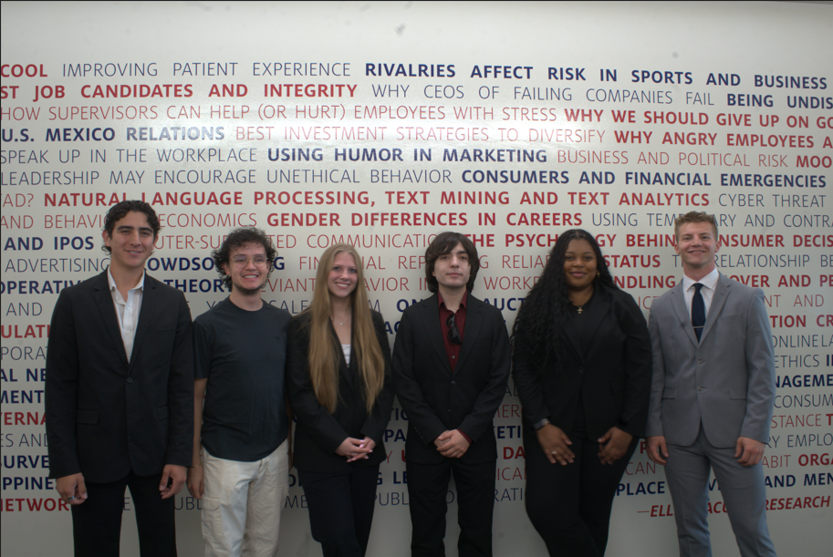

Presentation
Client Communication Plan
Led a team presentation from planning to delivery, including slide structure, speaking transitions, and timing. Focused on making a complex topic clear and engaging.
Technical Skills
- Presentation design
- Message structuring
- Audience analysis
Interpersonal Skills
- Public speaking confidence
- Team coordination
- Leadership under pressure